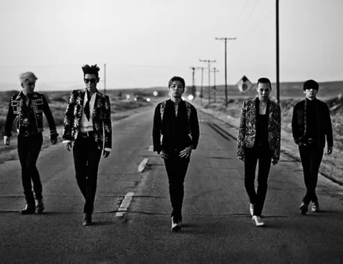

♬K-Pop人集合！！！♬
1.请问以下哪个女子团体的人数最多？(以现役人数为准)
A. (G)I-DLE
B. aespa
C. itzy
D. IVE
2.请问以下哪个团体/艺人没有发布过以《Bad Boy》为名的歌曲?

A. BIGBANG
B. Red Velvet
C. 金请夏
D. 少女时代
3.请问王嘉尔和以下哪位女艺人没有合作过舞台？（现在压力来到了小唐老师这边）
A. 泫雅
B. 宣美
C. Jessi
D. 邓紫棋
♬感谢你看到这里，你觉得自己对K-Pop的了解程度有多少呢？♬